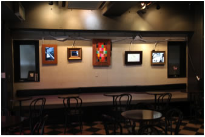
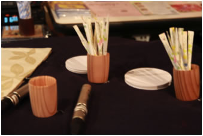

These days, we are overwhelmed by more and more visual images, which appear not only on TV or movies but also on the Internet or mobile phones, rather than we were used to be. These images usually contain too various assertions that it has become more natural for us to watch them just passively. However, we must consider ourselves. Isn’t there another better way to “watch” them?
“Motionscape” is a coined term which consists of “motion” and “scape”. It is a name of the concept, of the project of artworks and of the activity to propose another aspect of watching images or movies. As the goal of this art project, we threw doubt on prevalent ways to watch images, such as prevalent TV programs, aimed at evoking another aspect of images in people’s mind, and predicted the future vision of images with framed images.
Inspired by some concepts, such as Mark Weiser's "Calm Technology" or Brian Eno's "Ambient Music", we attempted to propose a calmer way to watch movies, by projecting movies within frames, as if they are displayed as drawings.
We held the exhibition at a coffee shop. We showed images on the wall, which are set in frames. They seem like drawings, as if they are painted. In addition, these images also reflected how customers were occupying the seats by using light sensors.
Customers sometimes and by accident got involved in a music concert. Activities to eat or drink something were converted into actions to play DJ or songs. And conversations and noises in the coffee shop were reflected in a played song, picked by hidden microphones. Thus, customers were involved in the audio+visual performance not only as listeners but also as players.
During the DJ set, coasters are used as a trigger of selecting songs and the density of sugar sticks determine characters of low-pass filters. During the real time composition set, coasters and sugar sticks are the triggers of melodies. Microphones are hidden in the coffee shop, picks up surrounding noise. Those recorded sounds are used as a rhythm loop or are modulated so as to comfort to the played music with a program (coded with Pure Data). A video jockey also plays videos for the played music interactively.
Project Management, Audio Signal Processing
More details available on this PDF file.